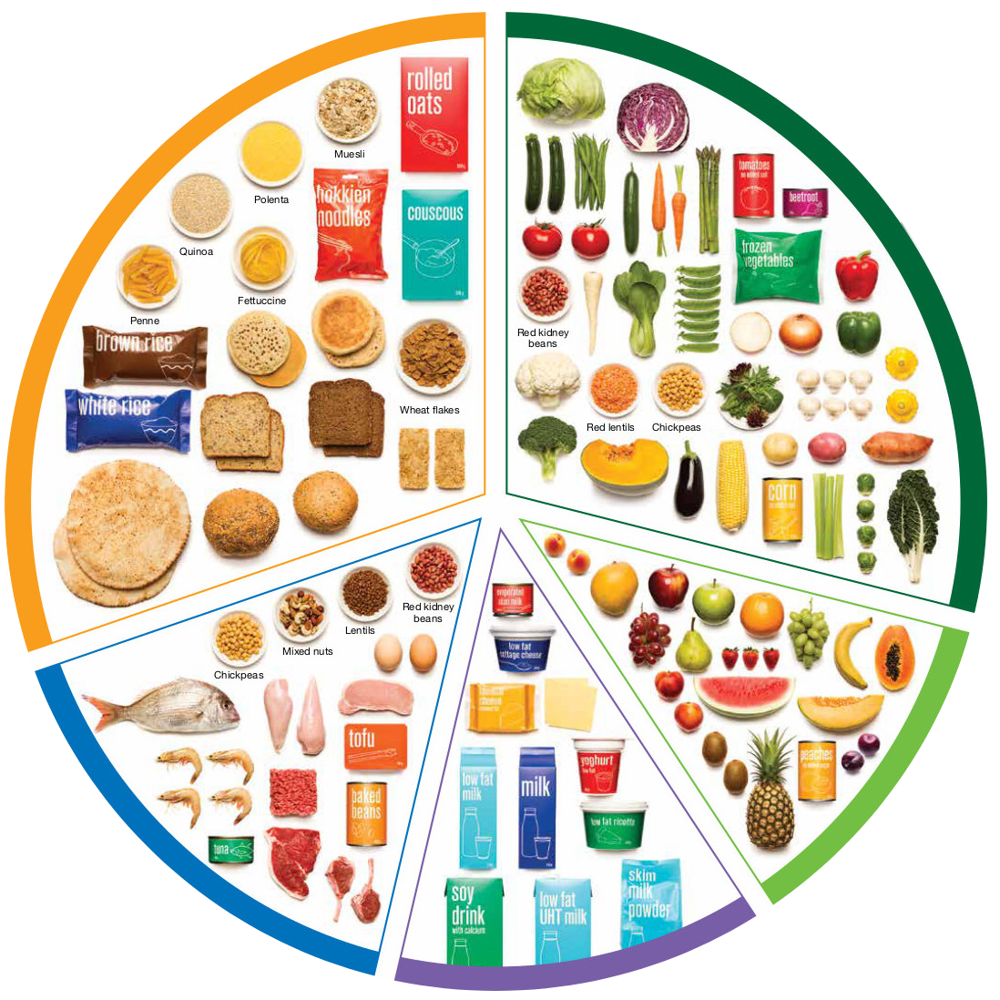
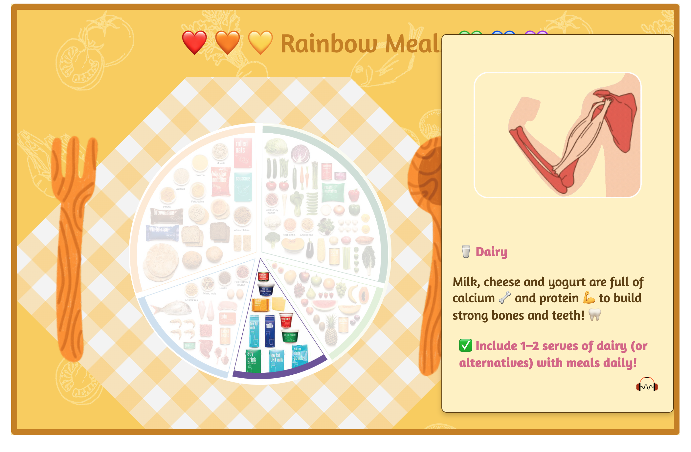
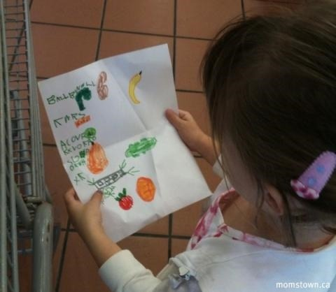

System Overview
NutriPlays translates nutrition education into a small digital learning journey. The main challenge was making abstract ideas such as balance, proportion, and food benefits understandable for very young users.
Problem
Healthy eating lessons can feel too abstract for children who mainly understand concrete images, simple actions, and visible outcomes.
Approach
I used food-group visuals, click feedback, short audio, plate proportions, and DIY lunchbox creation to turn nutrition concepts into hands-on learning tasks.
Result
The concept demonstrates how gamification, educational theory, and parent-informed research can support a clearer nutrition learning experience.
This is an early project detail page draft. The structure is ready for deeper editing, and the content is intentionally concise so it can be revised against the full report later.
Technology Stack
The technical structure stays deliberately simple: a static front-end prototype with separate pages for learning, practice, media feedback, and an offline extension activity.
Technology Stack
Learning Flow
Feature Deep Dive
The strongest product story is the path from passive nutrition information to active learning. Each feature gives children a concrete action they can understand.
Rainbow Meals
The first learning page introduces the healthy plate through clear visual segments. Children can explore food groups and receive immediate feedback through pop-up information, animation, and audio.
- Pain: Terms such as balance, nutrition, proportion, and food group can be difficult for young children to process as abstract text.
- Solution: The plate layout turns food groups into visible areas, while click-triggered tips explain body benefits in concrete language.
- Result: Children can connect food choices with body outcomes through image, action, and repetition.

DIY Lunchbox
The practice page asks children to build their own lunchbox by choosing foods. The task encourages active knowledge construction instead of only listening to information.
- Pain: Children may know individual foods but struggle to apply food-group knowledge when choosing a meal.
- Solution: Drag-or-click style selection gives them a concrete way to test combinations and notice missing categories.
- Result: Completed and incomplete lunchboxes both become discussion points for parents or teachers.

Offline Activity
The shopping list activity extends the digital lesson into a real-world family context. Children can connect screen-based learning with a later conversation or supermarket activity.
- Pain: Nutrition learning can stay isolated inside the screen if it is not connected to daily food choices.
- Solution: The activity asks children to draw or list foods they may need for a healthy lunchbox.
- Result: The concept creates a bridge from digital exploration to parent-supported practice.

Reflection
Current lesson
Designing for children changed the meaning of usability. Clear visuals, immediate feedback, simple language, and limited choices became core design requirements, not surface polish.
Trade-off
The early concept tried to include many learning goals. Peer review helped narrow the focus toward a clearer path: learn the plate, build a lunchbox, then connect it to an offline activity.
Team challenge
The project involved a large team with different expectations and uneven communication. I eventually built a separate front-end page to demonstrate the features and design direction I believed were most important.
My position as a parent of a target-age child helped me gather first-hand observations and test whether the idea matched real parent and child needs.
Personal Takeaway
NutriPlays shows my ability to connect user research, learning theory, visual interaction, and front-end implementation into a coherent product concept.
Audience-aware design
I learned to adapt interaction complexity, copy, and visual feedback to the cognitive stage of younger users.
Research-backed decisions
Literature review and parent feedback helped shape features around motivation, active learning, and real-life context.
Prototype delivery
I practised turning a product idea into working static pages with HTML, CSS, JavaScript, images, animation, and audio.
Reflective iteration
I used peer feedback and AI-assisted brainstorming to refine the scope while keeping the final design grounded in evidence.